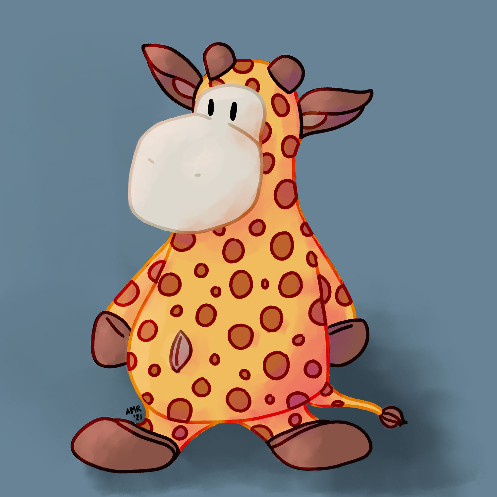
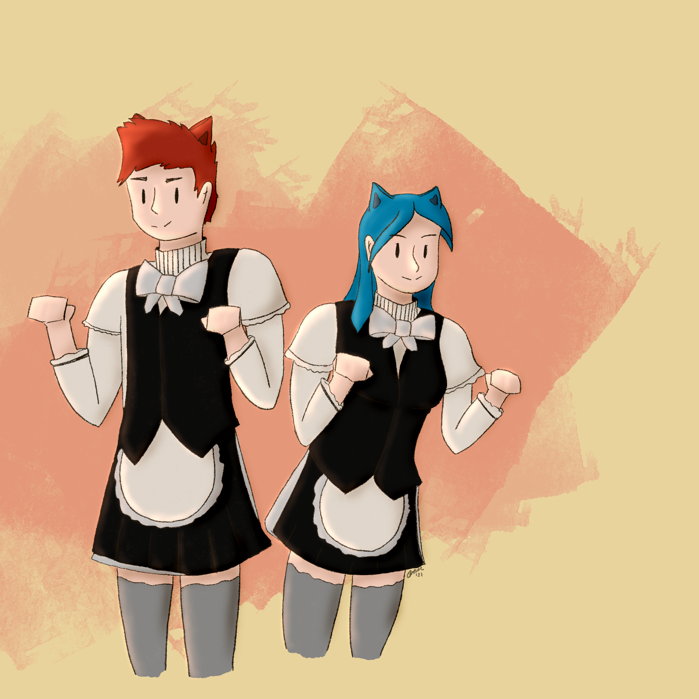

this is a collection of various digital artwork i've done recently, from personal designs to ones done for my friends:



a digital painting of my friend's childhood plush toy, gerry the giraffe done for her birthday
a digital painting based on an idea i had at age 12 of a hamburger-styled dress, recreated at age 19
a digital painting based off of my current dungeons and dragons character tanner at a pivotal moment in the story
a digital painting / collage done for the course FINE 257 - video, new media and the digital turn, made to represent interactivity throughout the years
a digital painting commission for some friends of them wearing matching (safe for work) maid costumes